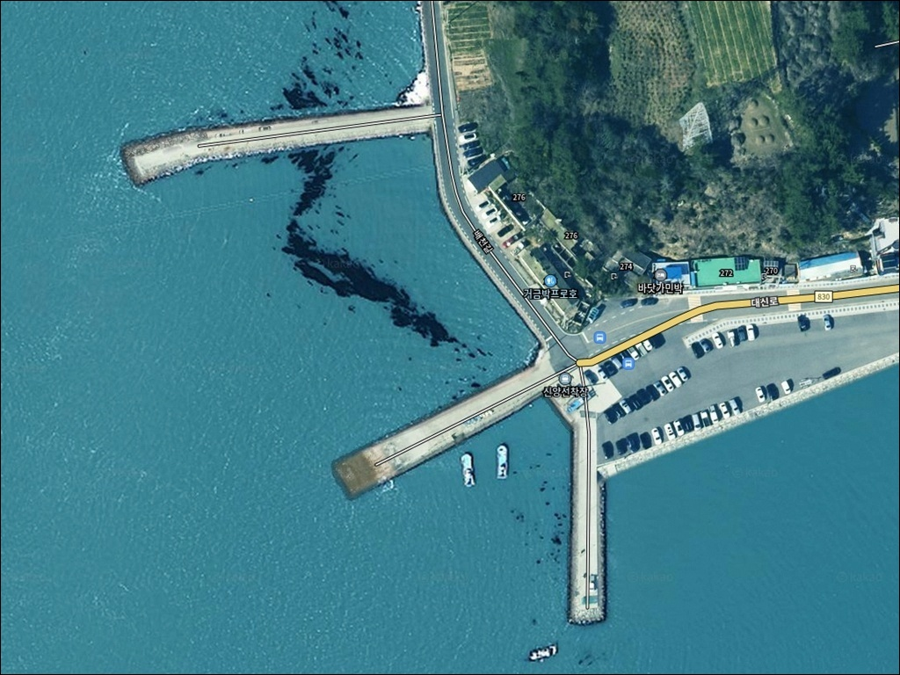
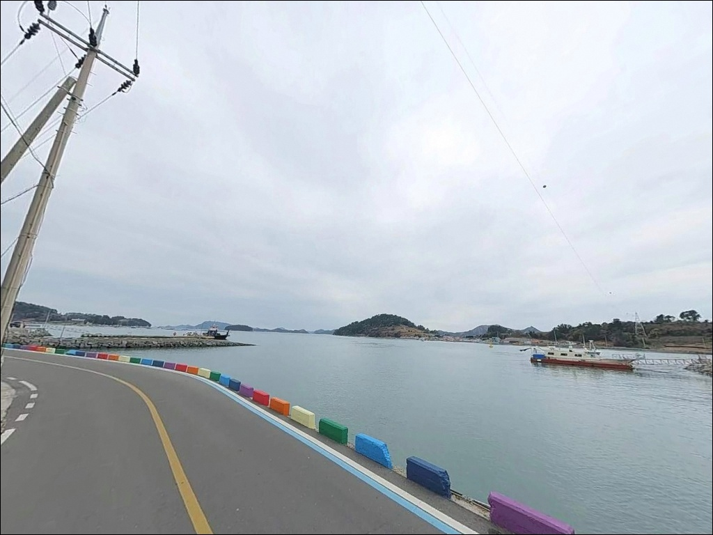
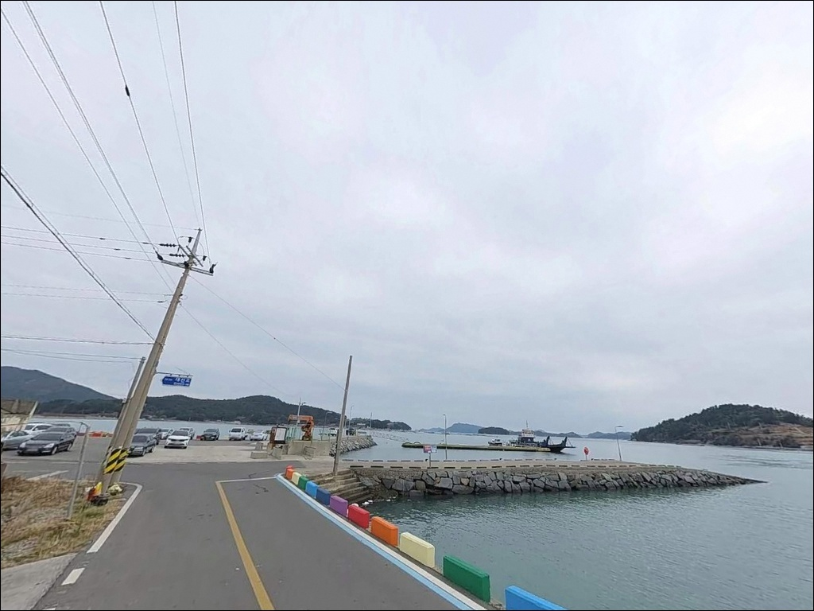
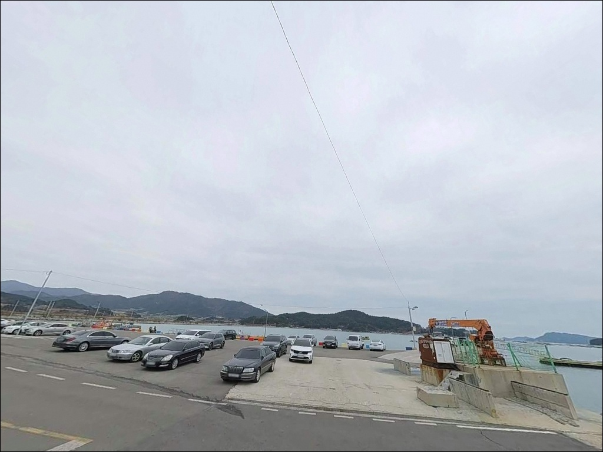
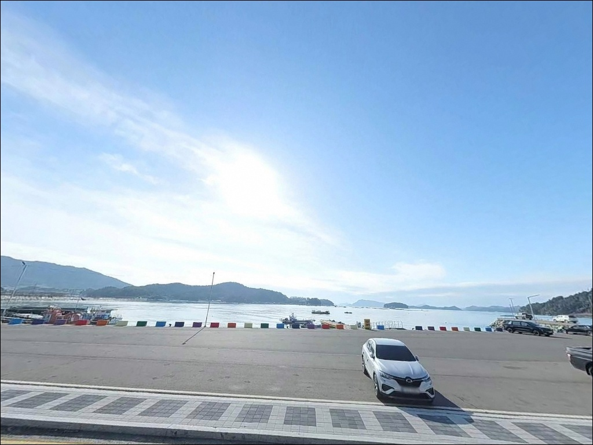
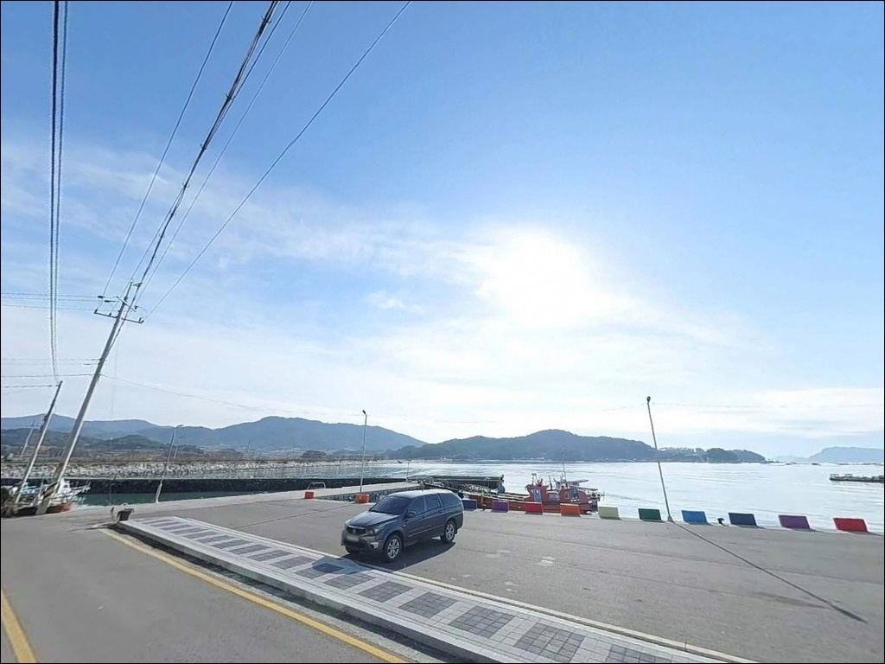
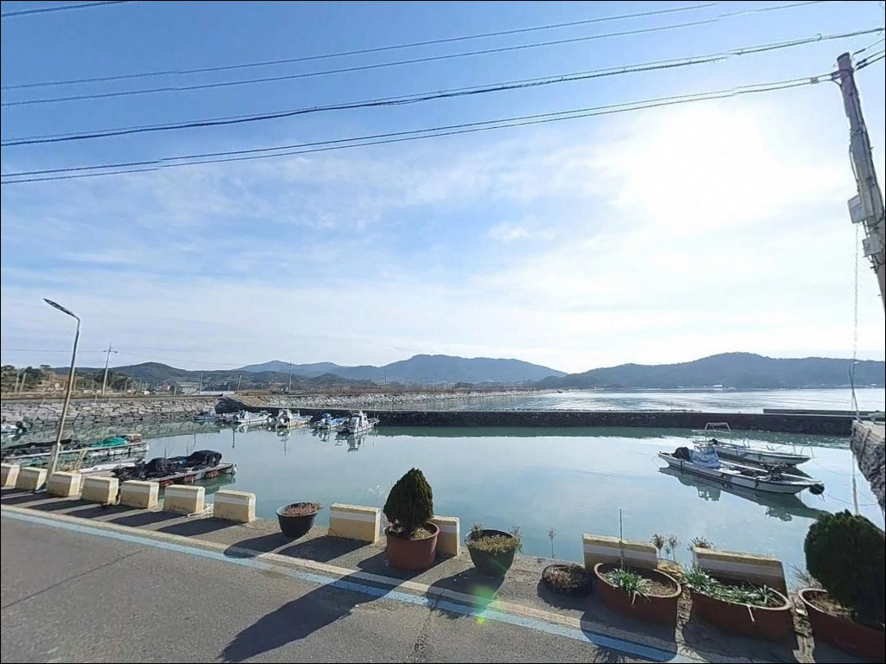
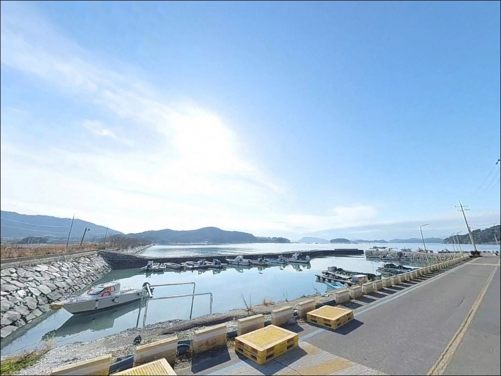
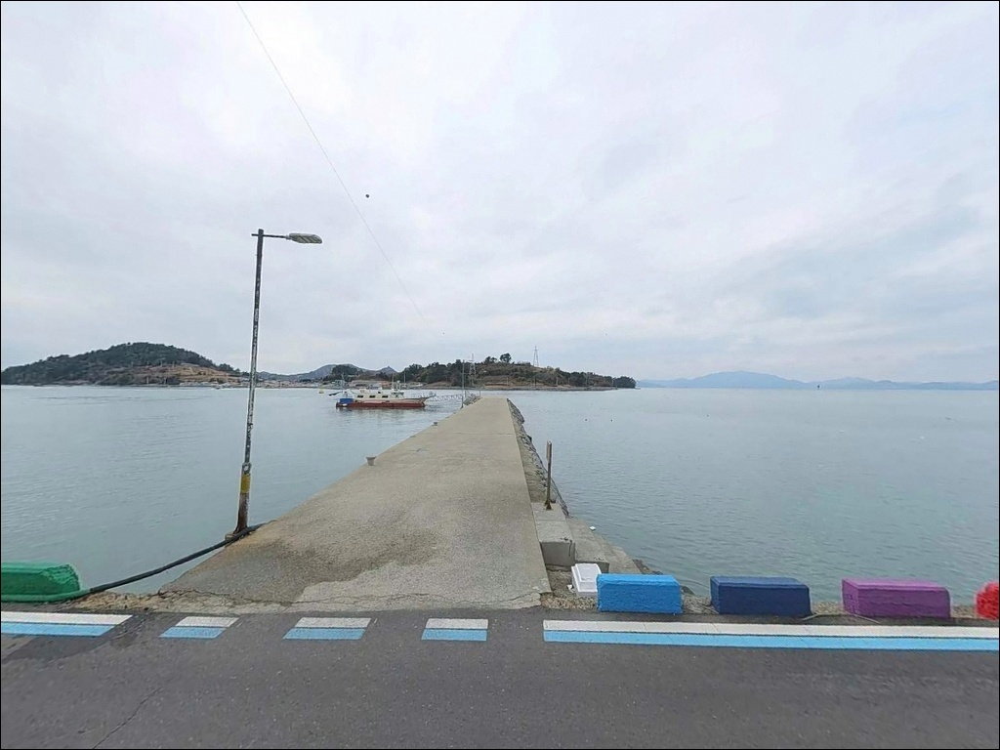

이 페이지에는 광고(제휴 링크 포함)가 있으며, 광고 링크를 통해 구매하면 운영자가 판매 수익 또는 수수료를 받을 수 있습니다. 포인트 사진: 카카오맵 스카이뷰·로드뷰. 이 페이지의 지도·사진 이미지는 카카오맵의 실제 서비스 이미지와 다를 수 있습니다.


사리 유속에 채비 다 쓸려가던 거금도 신양선착장, 초들물에 살아난 입질
포인트 안내
신양선착장
전남 고흥군 금산면 신촌리 1421-4
거금도와 연홍도 사이 해협 수로는
사리 때 유속이 강해져
채비 컨트롤이 어려워지는 구간입니다.
물때를 맞추지 않고 이 포인트에 들어서면
어떤 채비를 써도
조류에 밀려 제대로 된 낚시 자체가 불가능해집니다.
전남 고흥군 금산면 신촌리,
거금도 서쪽 끝자락에 자리한
신양선착장은 연홍도 도항선이
정기 출발하는 여객 선착장입니다.
득량만 입구 수로와 맞닿은 구조로
조류 흐름이 살아 있고 수심이 깊어
선착장형 낚시 포인트로서의 여건을 갖추고 있습니다.
이 글은 신양선착장의
진입 동선, 차박 여건, 물때 판단 기준,
낚시 방식별 공략 조건에 집중합니다.
조황 단정이나 특정 어종 보장은
이 글의 범위에 포함되지 않습니다.

1. 진입 동선과 포인트 접근성
거금도는 거금대교를 통해 육지와 연결되어 있어
차량 진입이 자유롭습니다.
신양선착장은 거금도 일주도로에서
신촌마을 안길을 거쳐 진입하는 구조로,
도로 포장 상태는 양호한 편이나
마을 구간에서는 서행이 필요합니다.
진입로 폭은 일반 승용차 및 소형 SUV 수준이며,
연홍도 도항선 운항 거점이라는 특성상
선착장 앞 광장에 차량 회차 공간이 갖춰져 있습니다.
주차는 선착장 진입부 광장과
방파제 내측 공터를 주로 이용하며,
낚시 자리와 거리가 짧아
장비 이동이 수월한 편입니다.
네비게이션에 "신양선착장" 또는
"전남 고흥군 금산면 대신로 276"을 입력하면
도로 안내가 가능합니다.
대형 캠핑카 등 긴 차량이라면
거금도 일주도로에서 마을 진입로로 꺾이는
구간 폭을 사전에 위성지도로 확인해 두는 편이 좋습니다.

2. 차박 환경과 야간 체류 여건
신양선착장은 도항선 운항 거점이라
선착장 앞 광장 자체는 평탄하고
차량 체류에 무리가 없는 구조입니다.
민가 밀집도가 낮고 거금도 서쪽 끝이라
차량 통행이 드물어
야간 간섭은 적은 편입니다.
연홍도행 도항선 운항이 끝나는 저녁 이후에는
선착장 주변이 조용해져
낚시를 마치고 하룻밤 머무르기에
나쁘지 않은 환경입니다.
다만 가로등이 충분하지 않아
야간에는 매우 어두운 편이며,
헤드랜턴과 캠핑용 조명은 필수입니다.
거금도 서쪽 외항은 남해 외해에 직접 노출되는 위치라
기상에 따라 바람 영향을 크게 받습니다.
기상 예보에서 풍랑특보나 강풍 주의보가 있는 날은
선착장 야간 체류 자체를 재검토하는 편이 안전합니다.


3. 주변 편의시설 및 인프라 현황
신양선착장 반경 3km 이내에
거금도 휴게소가 있습니다.
편의점이 입점되어 있어
간단한 식음료와 낚시 소품 일부를
해결할 수 있는 편입니다.
거금도 농협주유소도 금산면 거금중앙길
방향으로 이용이 가능합니다.
선착장에서 도보로 이동 가능한 거리인
약 300~500m 거리에
거금해양낚시공원이 있습니다.
유료 해상낚시 시설로 개인 낚시 포인트는 아니지만,
해당 해역의 어종 패턴을 가늠하는
참고 자료로 활용할 수 있습니다.
선착장 자체에는 편의시설이 없습니다.
식수, 낚시 채비 여분, 연료, 비상약품은
출발 전에 모두 갖추고 진입하는 것이
현실적인 준비 방식입니다.

4. 물때를 모르면 빈손으로 돌아오는 포인트
신양선착장 방문에서 가장 먼저 확인할 것은
물때입니다.
거금도와 연홍도 사이 해협 수로는
사리 전후 유속이 강해지는 구간으로,
채비가 조류에 밀려
바닥 공략이 어려워지는 타이밍이 있습니다.
초들물과 초썰물 전후 타이밍을 계산하고
입장하는 것이 이 포인트의 기본 공략 방식입니다.
거금도 서쪽 외항은 기상 변화가 빠른 지역입니다.
기상청 해상 예보와 풍향·풍속을
출조 당일 아침에 다시 확인하고,
파고나 강풍 예보가 있는 날은 입장을 미루는 판단이 필요합니다.
연홍도 도항선이 정기 운항하는 시설이므로
선착장 출입 통로와 계류 시설 주변에서
낚시 채비를 펼치는 것은 삼가야 합니다.
어선 이동 동선을 방해하지 않는 위치를
먼저 확인한 뒤 자리를 잡는 것이
기본 매너이자 안전 수칙입니다.

5. 지형 기반 낚시 여건 분석
신양선착장의 핵심 구조는
거금도와 연홍도 사이 해협 수로와의 연결에 있습니다.
득량만 입구 수로 목에 해당하는 위치로,
조류 흐름이 집중되는 구간이 자연스럽게 형성됩니다.
방파제 형태로 길게 뻗은 정박시설이
외해 방향으로 돌출된 구조라
외항쪽은 남해 외해 영향을 직접 받는 지형입니다.
수심은 선착장 내항 기준 만조 시 3~5m,
방파제 끝단 외항 방향은 5~8m 수준으로
선착장형 포인트로서 수심이 충분한 편입니다.
내항과 외항 사이 수심 변화가 있어
방파제 끝단 콧부리 구간이
입질 포인트로 집중되는 구조입니다.
선착장 주변에는 석축 구조물이 형성되어 있고
전방 수중 지형은 갯벌과 여밭이 혼합된 형태입니다.
여밭 구간은 볼락·노래미 등 락피시가
은신하기 좋은 조건이며,
조류 변화가 큰 수로 구간에서
회유성 어종의 통과도 기대해볼 수 있습니다.
최신 조황은 출조 전에 반드시 검색해 보시기 바랍니다.

6. 신양선착장에서 조과를 높이는 낚시 스타일
이 포인트에서 가장 잘 맞는 방식은
릴 찌낚시입니다.
방파제 외항 방향에서 조류를 타고 흘리는 방식으로
거금도 일대 방파제 해역에서
감성돔과 농어 계열을 기대해볼 수 있는
지형 조건이 갖춰진 구조입니다.
원투낚시도 이 포인트 구조에 잘 맞습니다.
내항 방향이나 방파제 끝단에서
모래·자갈 혼합 바닥 구간을 노리는 방식으로,
도다리·노래미·붕장어(야간) 계열을
기대해볼 수 있는 해역입니다.
조류가 강한 날은 봉돌 무게를
충분히 올려 채비가 흘리지 않게 세팅하는 것이 중요합니다.
에깅도 시도해볼 수 있는 포인트입니다.
에깅이란 갑오징어·무늬오징어를 대상으로
에기(인조 미끼)를 사용하는 루어낚시 방식입니다.
가을철 석축 주변과 선착장 끝단 구간에서
갑오징어와 주꾸미를 노리는
워킹 에깅이 가능하며,
야간에는 소형 지그헤드 채비로
석축 경계선을 탐색하는 라이트게임도 운용할 수 있습니다.

7. 대안 포인트와 플랜 B 동선
신양선착장이 조류가 너무 강하거나
주차 여건이 맞지 않을 때는
거금도 동쪽의 오천항이
가장 먼저 검토할 대안 포인트입니다.
국도 27호선 기점에 위치하고
바다타임에 낚시 포인트로 등재된 곳으로,
진입과 주차 여건이 안정적입니다.
거금도 일주도로를 따라
거금도 명천방파제 방향으로 이동하면
남해 외해 노출 방파제로서
릴 찌낚시와 원투 낚시 여건을
비슷한 조건에서 탐색할 수 있습니다.
동일 해역이라 조류 패턴도 유사한 편이며
낚시 자리 확보에는 신양선착장보다
더 여유가 있는 구조입니다.
차박 거점을 바꾸고 싶다면
거금대교 인근 거금휴게소 전망대 일대가
대안 후보입니다.
도로 접근성이 좋고 바다 전망이 확보되어 있어
하룻밤 머무르는 차박 동선으로
활용하기 좋은 위치입니다.

수로 조류를 읽으면
신양선착장이 달라집니다
릴 찌낚시나 원투낚시를 즐기는 낚시인이라면
신양선착장의 지형 조건은
시도해볼 만한 구조입니다.
득량만 입구 수로 특유의 조류 흐름이
살아 있는 낚시 환경을 만들고,
온라인 정보가 많지 않아
직접 답사해 두기 좋은 포인트이기도 합니다.
반면 물때 계산 없이 사리 전후에 도착하거나,
자급 준비 없이 진입하면
낚시와 차박 모두 기대에 못 미치는
상황이 될 수 있습니다.
물때 확인, 자급 준비, 기상 점검,
이 세 가지를 갖추고 간다면
거금도 서쪽 끝에서 조용한 하루를
보낼 수 있는 포인트입니다.
연홍도 방향 수로 바람을 맞으며
낚싯대를 드리우고 하룻밤 차 안에서 머무는
조용한 출조를 계획하는 낚시인에게
신양선착장은 발품만 팔면 충분히 보답하는 곳입니다.